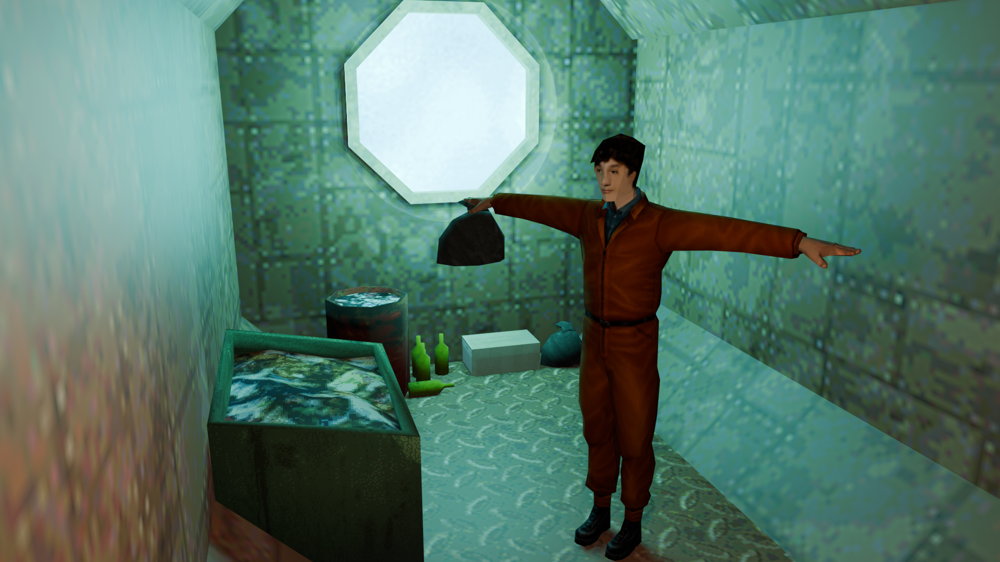
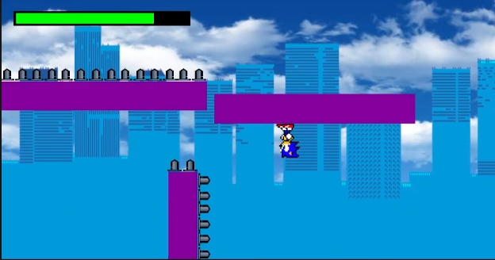

Garináutica

Um jogo sendo desenvolvido na Godot Engine, sua proposta é ser um jogo sobre reciclagem de lixos marítimos para sua sobrevivência em um submarino em crise.
Ver no GitHubJogo Unity (IFRJ)

Um Jogo desenvolvido durante o curso de Jogos-1 do IFRJ Campus Niterói
Ver no GitHub